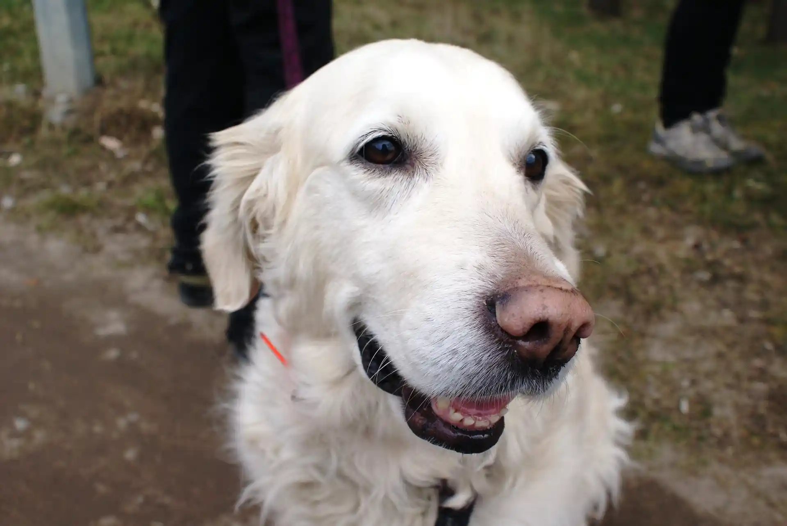

#02
VALEN
Valentina
- Ciudad
- Ezeiza, Buenos Aires
- Edad
- 23 años
Maquetadora obsesiva de los detalles. Si el diseño no queda igual en 400 px que en 1200 px, no duermo. Toco el piano (mal) y programo (mejor).
Skills
- HTML semántico
- CSS (Flexbox y Grid)
- JavaScript
- Diseño UX/UI en Figma
Películas favoritas
- Whiplash (2014)
- La La Land (2016)
- Ratatouille (2007)
Discos favoritos
- Clics Modernos — Charly García
- El amor después del amor — Fito Páez
- Future Nostalgia — Dua Lipa